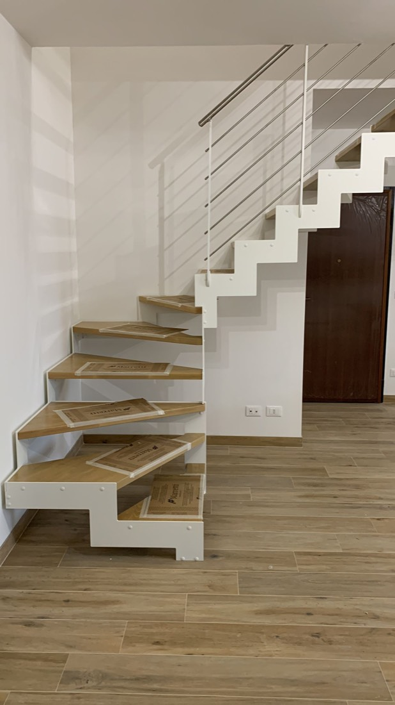
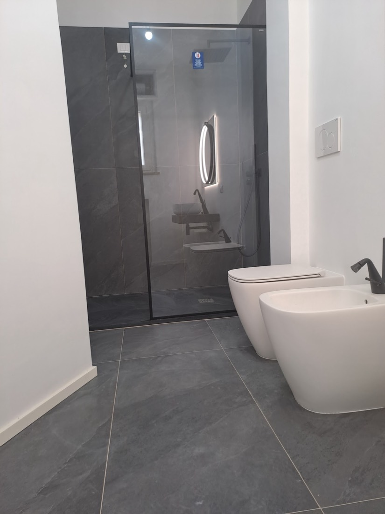
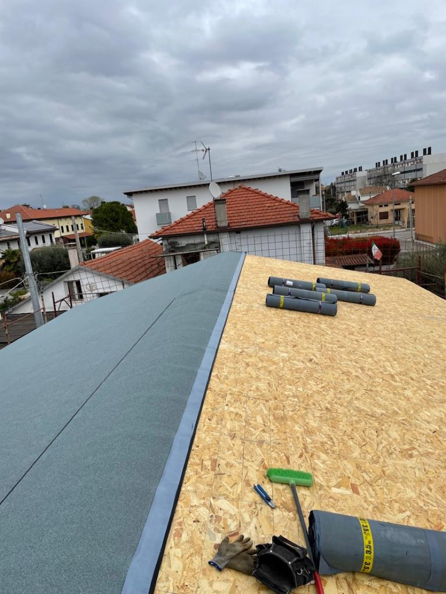
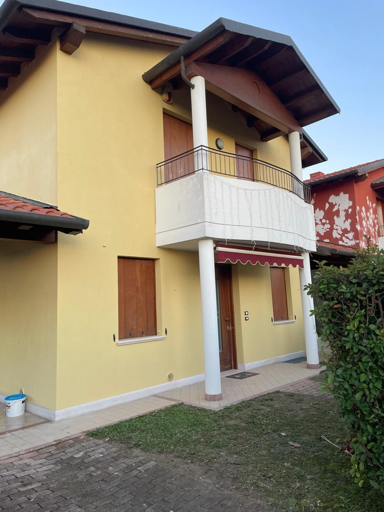

Impresa edile · Pordenone
Case rifatte a Pordenone, dal tetto al bagno.
Albino Artieri e la sua squadra: ristrutturazioni, bagni, massetti, tetti e tettoie.
5,0 21 recensioni su Google




- 5,0su Google
- 21recensioni
- Via Revedole 39Pordenone
- Albino Artierititolare, in cantiere
01 · Lavori
Dentro e fuori casa, una sola squadra.
Dal massetto al tetto, i lavori che si vedono nelle foto pubblicate da ARTEDIL. Toccate una voce per vedere il cantiere.
Case e appartamenti rifatti, anche con la famiglia che ci abita durante i lavori.
Docce a filo pavimento, sanitari sospesi, lavabi su mensola e specchi retroilluminati.
Pareti attrezzate con nicchie, rivestimento in pietra e luce LED.
Pavimenti costruiti sopra il riscaldamento a pavimento, strato per strato.
Tavolato, guaina, coppi; tettoie per auto e giardino.
Muri in laterizio e demolizioni interne, con il cantiere lasciato in ordine.
02 · Un pavimento, strato per strato
Sotto il pavimento c'è un lavoro che non si vede.
- 01Solaiola base in calcestruzzo
- 02Pannello isolantebugnato, tiene i tubi in posizione
- 03Tubi radiantidal collettore, stanza per stanza
- 04Massettocopre i tubi e porta il calore
- 05Pavimentogres o legno, a vostra scelta
03 · Dai cantieri
Foto vere, dei lavori di ARTEDIL.
Le foto che la ditta ha pubblicato su Google. Trascinate o scorrete.
04 · Chi ci ha chiamato
«Abitando in casa durante i lavori, temevo soprattutto la polvere.»
Poi, scrive Vincenzo, hanno lavorato «limitando al massimo la polvere e lasciando tutto pulito e ordinato».
Vincenzo Benedetto, recensione Google
«Ci siamo affidati ad Albino e alla sua squadra per un lavoro di demolizione nel nostro appartamento.»
Cosimo Barone«Il lavoro è stato completato nei tempi previsti.»
Marco Ciciulla, ristrutturazione della casa«Ho affidato alla ditta Artedil la realizzazione della mia tettoia.»
Alessio«Gli operai sono stati veloci, estremamente puntuali ed educati.»
Michele Sacco
05 · Come si parte
Una telefonata, poi il cantiere.
- 1Chiamate Albino
Raccontate il lavoro: un bagno, una casa intera, un tetto.
- 2Sopralluogo
Si guarda insieme quello che c'è da fare, sul posto.
- 3Preventivo
Lavori, materiali e tempi messi per iscritto.
- 4Cantiere e consegna
La squadra lavora, pulisce e vi riconsegna la casa.
06 · Contatti
Raccontateci il lavoro.
Chiamate Albino al cellulare o scrivetegli su WhatsApp. Oppure lasciate due righe qui e vi richiamiamo.
- Telefono329 675 9707
- WhatsAppScrivete ad Albino
- SedeVia Revedole, 39
33170 Pordenone PN